An exploration of 26 years of precursor awards data — and what it tells us about Hollywood's biggest night.
Our dataset spans 16 award shows across 26 years (2000–2025), with a total of 5,346 records. This includes major industry awards (DGA, PGA, SAG, WGA), big-tent shows (BAFTA, Golden Globes, Critics Choice), critics' circles (NYFCC, LAFCA, NSFC, NBR), and festival awards (Cannes, Venice, Toronto).
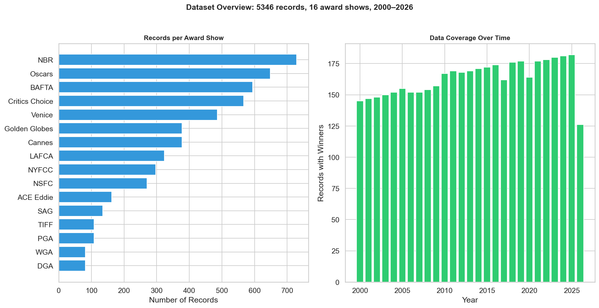
Not all precursor awards are created equal. The DGA Awards stand out as the single most predictive precursor, followed by the PGA, SAG, and Critics Choice. Festival awards (Cannes, Venice) almost never directly predict Oscar winners — they operate on a different aesthetic axis entirely.
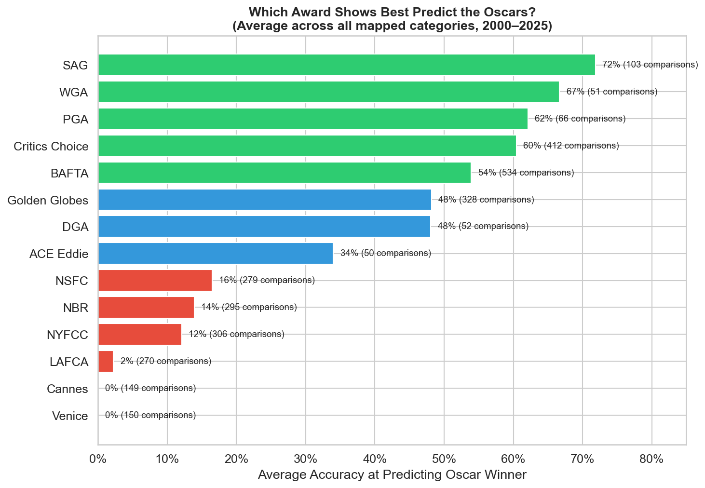
This heatmap reveals the nuance. The DGA's extraordinary accuracy is specific to Best Director. For Best Picture, the PGA is king. For acting categories, SAG and BAFTA are the most reliable signals. Some categories (editing, song) have surprisingly low predictability from any precursor.
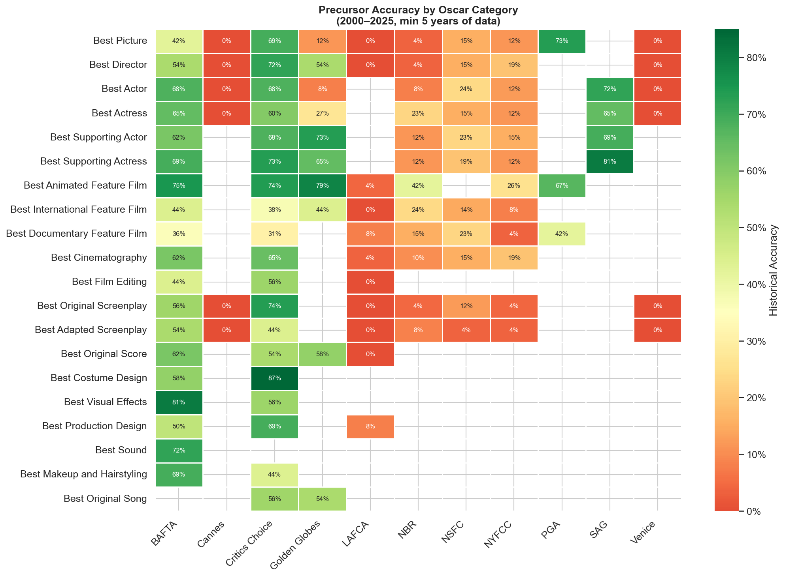
Looking at 5-year rolling accuracy for Best Picture precursors, we can see interesting shifts. The PGA has become more predictive in recent years, while the Golden Globes' predictive power has been declining. This likely reflects the PGA's growing alignment with Academy voters.
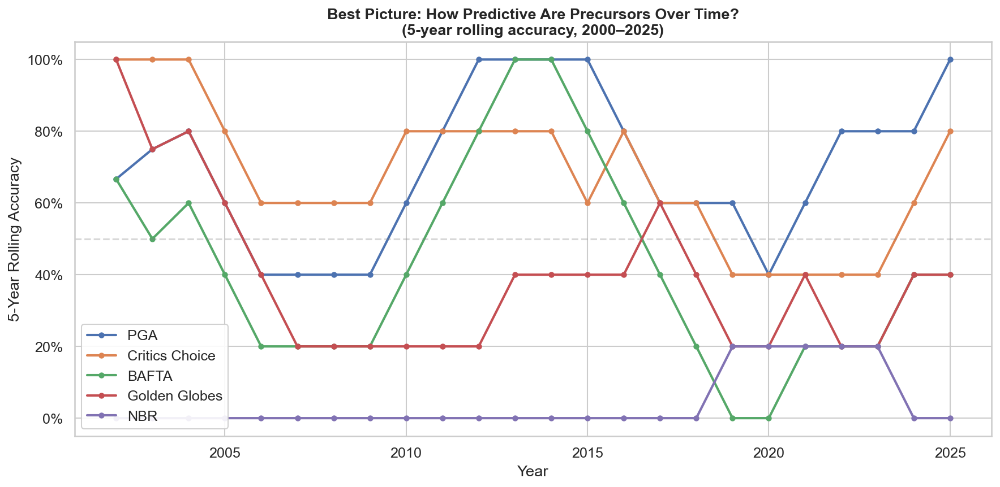
When the PGA and BAFTA agree on Best Picture, pay attention. But interestingly, the major shows don't always agree — the Golden Globes often picks differently from the pack due to its Drama/Musical-Comedy split. Agreement rates between certain pairs of awards are remarkably high, suggesting shared voter sensibilities.
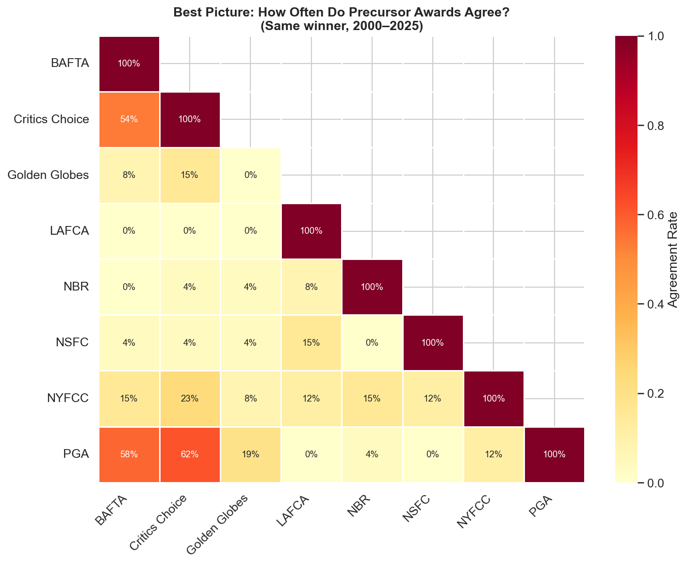
The median Best Picture winner won about 18% of available precursor awards. But the distribution is bimodal — there are "coronation" years where one film sweeps everything, and "contested" years where the winner emerged from a split field. Acting categories show a similar pattern.
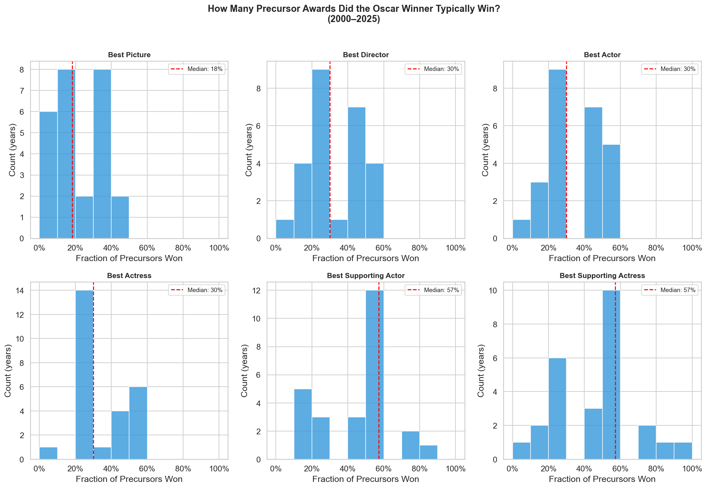
Best Director and Best Animated Feature are the most predictable Oscar categories — if you know the DGA and Golden Globe Animation winners, you're right ~80% of the time. At the other end, categories like Best Film Editing, Best Song, and Best Production Design are much harder to forecast from precursors alone.
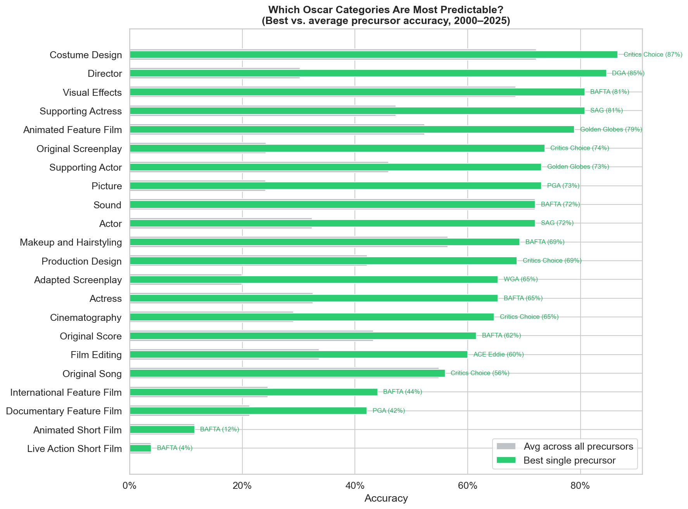
The pattern is clear: industry guild awards (DGA, PGA, SAG, WGA) are the best Oscar predictors because they share the most voter overlap with the Academy. Major shows (BAFTA, Golden Globes, Critics Choice) are next. Critics' circles have more idiosyncratic tastes. And festival awards operate on an almost entirely different wavelength.
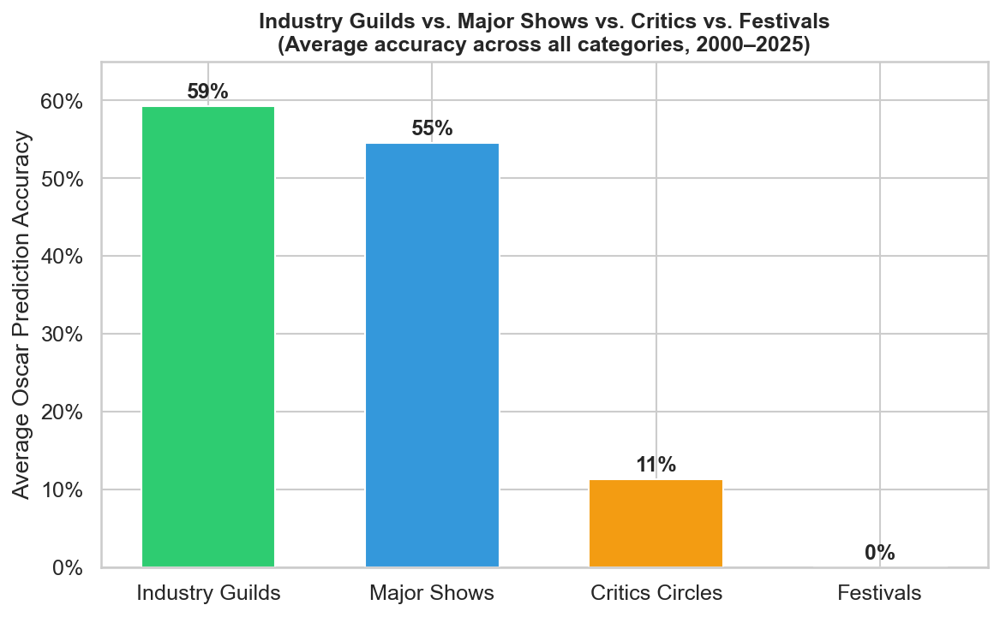
The DGA has matched the Oscar Best Director winner in 85% of years since 2000 — the most reliable single predictor in all of awards season. The rare misses are fascinating: they tend to happen in years with strong narrative momentum behind a different director.
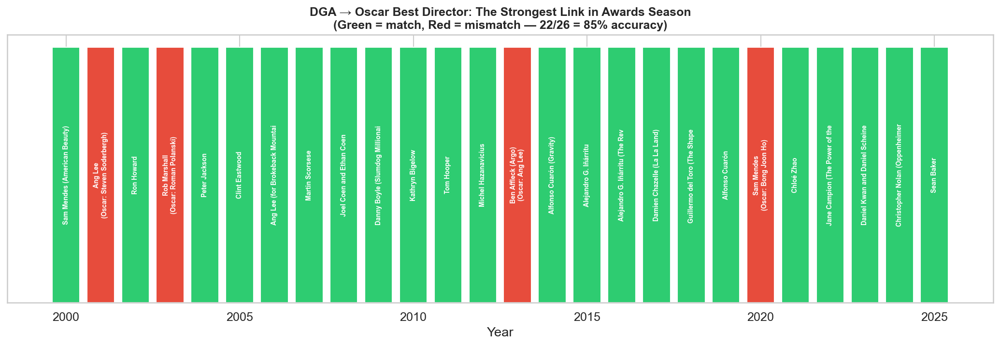
When 90%+ of precursor awards agree on a frontrunner, that person/film wins the Oscar nearly every time. But when consensus drops below 50%, it becomes a coin flip. This has direct implications for our 2026 predictions — the Best Actor race, with four different precursors picking four different people, is genuinely unpredictable.
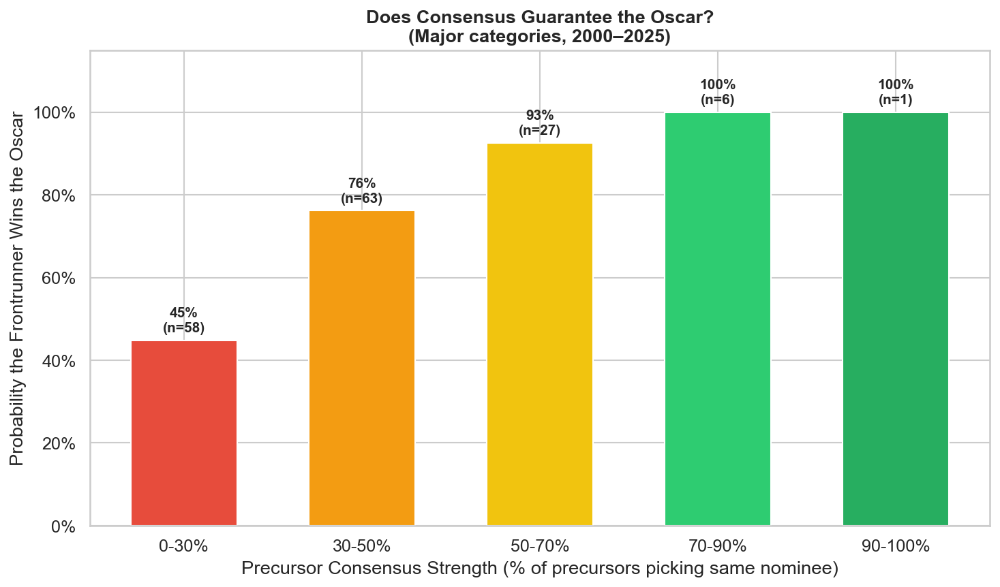
A well-calibrated model should win 70% of the time when it says it's 70% confident. This reliability diagram shows how each model's confidence maps to actual accuracy. Points above the diagonal indicate under-confidence; points below indicate over-confidence.
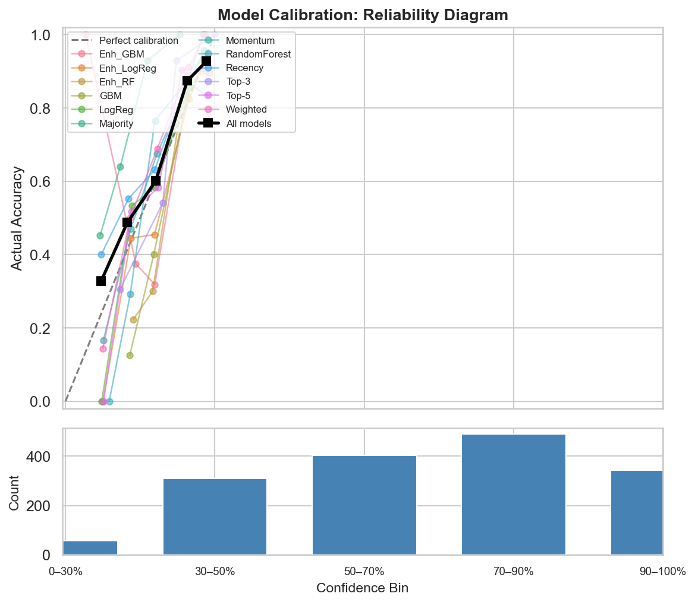
Expected Calibration Error (ECE) measures how far each model's confidence is from reality. Lower ECE means the model's confidence scores are more trustworthy — important when using these predictions to make actual forecasts.
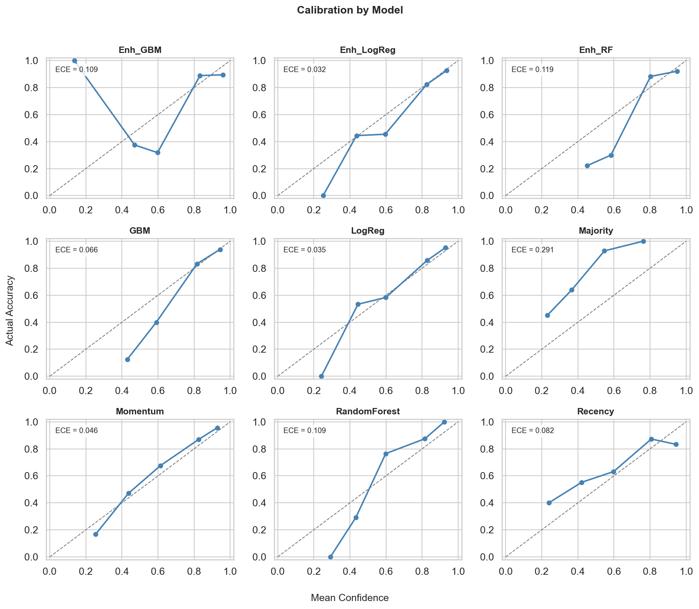
These are the years where the Oscar winner wasn't picked by any of the top 4–5 precursor awards for that category. These are the true surprises — the times the Academy zagged when everyone expected them to zig. There have been 7 such upsets since 2000.
| Year | Category | Oscar Winner | What Precursors Picked Instead |
|---|---|---|---|
| 2005 | Best Picture | Million Dollar Baby | PGA: The Aviator (Michael Mann and Graham King); Critics Choice: Sideways; BAFTA: The Aviator; Golden Globes: The Aviator; Golden Globes: Sideways |
| 2006 | Best Picture | Crash | PGA: Brokeback Mountain (Diana Ossana and James Schamus); Critics Choice: Brokeback Mountain; BAFTA: Brokeback Mountain; Golden Globes: Brokeback Mountain; Golden Globes: Walk the Line |
| 2020 | Best Picture | Parasite | PGA: 1917; Critics Choice: Once Upon a Time in Hollywood; BAFTA: 1917; Golden Globes: 1917; Golden Globes: Once Upon a Time in Hollywood |
| 2013 | Best Director | Ang Lee | DGA: Ben Affleck (Argo); Critics Choice: Ben Affleck (Argo); BAFTA: Ben Affleck; Golden Globes: Ben Affleck |
| 2002 | Best Actor | Denzel Washington | SAG: Russell Crowe; BAFTA: Russell Crowe; Critics Choice: Russell Crowe; Golden Globes: Russell Crowe |
| 2003 | Best Actor | Adrien Brody | SAG: Daniel Day-Lewis; BAFTA: Daniel Day-Lewis; Critics Choice: Daniel Day-Lewis and Jack Nicholson (Tie); Golden Globes: Jack Nicholson |
| 2025 | Best Actress | Mikey Madison | SAG: Demi Moore; BAFTA: Marisa Abela; Critics Choice: Demi Moore; Golden Globes: Fernanda Torres |
Armed with these historical patterns, we built a weighted precursor model to forecast the 2026 Oscars. The model weights each precursor award by its category-specific historical accuracy, then aggregates the 2026 precursor winners into predictions.
The high-confidence picks (Best Director, Best Actress, Best Adapted Screenplay) have strong precursor consensus — the kind that historically leads to an Oscar win nearly every time. But the Best Actor race, with four different precursors picking four different people, is the kind of split that makes awards season genuinely exciting.